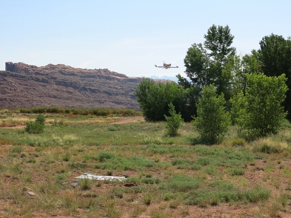
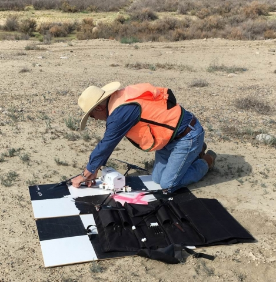
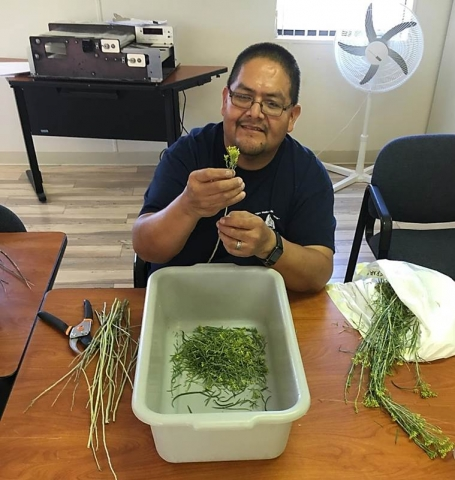
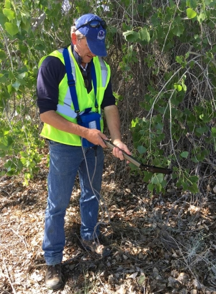

The U.S. Department of Energy (DOE) Office of Legacy Management (LM) uses mathematical models and monitoring-well data to understand and predict contaminated groundwater flow at former uranium processing sites. A more holistic understanding of groundwater systems may lead to more reliable models and better remediation strategies. Plants, for example, can influence the flow of groundwater. Plants with roots that tap groundwater to survive, called phreatophytes, can withdraw large volumes of water and alter groundwater flow. The combination of this pumping of water by plants (transpiration), and evaporation of water from a soil surface, is called evapotranspiration (ET).
|  |
The LM Applied Studies and Technology (AS&T) program is collaborating with the DOE Office of Environmental Management (EM), the U.S. Geological Survey (USGS), and the University of Arizona (UA) to improve a method for estimating ET discharge of groundwater using imagery from unmanned aircraft systems (UAS). The collaboration will benefit DOE and USGS. LM’s extensive network of groundwater monitoring wells record fluctuations in groundwater elevation and flow at uranium processing sites. LM will use the USGS’s UAS technology to test hypotheses that these fluctuations can be attributed, in part, to changes in ET over time and space. USGS is studying ET by tamarisk, a non-native tree that competes for water with native cottonwoods and willows along river corridors of the southwestern United States. USGS is particularly interested in tamarisk defoliation by introduced beetles and subsequent effects to tamarisk health and ET on water resources. Tamarisk beetles co-evolved in Asia with tamarisk trees. The U.S. Department of Agriculture released tamarisk beetles for biocontrol after years of studies verified that they feed only on plants of the tamarisk family. USGS and UA will use LM’s groundwater monitoring data as an independent check of their UAS methods for estimating tamarisk ET.
|  |
| John Vogel, USGS, preparing to launch a quadcopter equipped with a multispectral camera to fly a section of the San Juan River floodplain near the Shiprock, New Mexico, site. |
The research team currently estimates ET using a computer algorithm that Dr. Pamela Nagler, USGS, and Dr. Edward Glenn, UA, derived from statistical relationships between ground-based measurements of plant health and ET, climate data, and multispectral satellite imagery. Satellite images are used to scale ET ground measurements to larger landscapes. The algorithm using satellite imagery works well for rangeland vegetation that may extend many miles. However, the satellite imagery lacks the resolution needed to estimate ET for smaller land areas within river corridors. The research team plans to use high-resolution UAS imagery to detect subtle changes in the patchy distribution of tamarisk and other phreatophytes growing at uranium processing sites adjacent to rivers in the southwestern United States. The higher UAS imagery resolution is due to the UAS flying at a lower altitude. Scientists will use UAS images to correlate satellite and UAS imagery to improve the algorithm for scaling up from ground measurements of plant health and ET to satellite images of larger landscapes. LM groundwater modeling could benefit from the improved algorithm’s greater vegetation detail where ET may be much higher along river corridors.
|  |
| Neilroy Singer, Diné Environmental Institute, Diné College, preparing rabbitbrush samples for leaf-area measurement using an electronic planimeter (background). |
In August 2016, LM, EM, and USGS scientists teamed with faculty from Diné College, a 4-year, tribally controlled community college serving the Navajo Nation, to obtain UAS imagery and ground data needed to estimate ET by tamarisks and other phreatophytes. The research team acquired imagery and measured plant growth indices for phreatophytic trees growing on floodplains at uranium mill tailings sites adjacent to the San Juan River near LM’s Shiprock, New Mexico, Disposal Site and the Colorado River near EM’s Moab, Utah, site. USGS pilots flew a quadcopter equipped with a high-resolution multispectral camera. Flights were timed to coincide with satellite overpasses. AS&T and Diné College scientists measured the leaf area index (LAI) of phreatophytes growing on the floodplains. LAI is the green leaf area within a plant canopy per unit of ground surface area. Scientists measured LAI indirectly for tree species and directly for smaller shrubs. The indirect method used an instrument with a fish-eye optical sensor that detects light penetrating a tree canopy at different angles, and a mathematical model of light interception and transfer in tree canopies. For the direct method, scientists harvested leaves overlying a standard ground surface area, and measured leaf area using an electronic planimeter.
What’s next? USGS scientists will process and analyze the UAS imagery then the research team will use that imagery and LAI data from Shiprock and Moab to refine the algorithm for estimating landscape-scale ET. LM and USGS will use the new algorithm to estimate spatial, seasonal, and annual variation in ET and groundwater discharge for tamarisk and other phreatophytes growing along river corridors at the Shiprock and Moab sites.
|  |
| Dr. Jody Waugh, LM support contractor AS&T scientist, uses an optical instrument to estimate leaf area index beneath a cottonwood tree growing on the San Juan River floodplain near the Shiprock, New Mexico, site. |